Git
You can use the Gerrit code review tool for projects that use Git.
Using Git for Windows
If you configure Git for use with git bash, only, and use SSH authorization, Git looks for the SSH keys in the directory where the HOME environment points to. The variable is always set by git bash.
However, the variable is typically not set in a Windows command prompt. When you run Git from a Windows command prompt, it looks for the SSH keys in its installation directory, and therefore, the authorization fails.
You can set the HOME environment variable from Qt Creator. Select Preferences > Version Control > Git, and then select the Set "HOME" environment variable check box. HOME is set to %HOMEDRIVE%%HOMEPATH% when the Git executable is run and authorization works as it would with git bash.
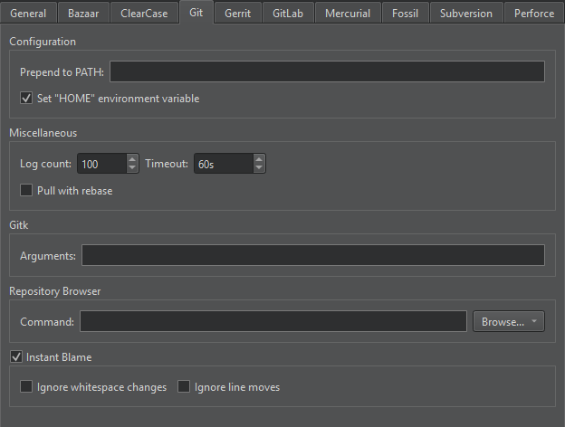
Initializing Git Repositories
To start controlling a project directory that is currently not under version control, select Tools > Git > Create Repository. Qt Creator creates a new subdirectory named .git that has all the necessary repository files. However, Git does not track anything in the project yet, so you will need to create an initial commit to start tracking the project files.
Working with the Current File
To work with the current file, select the commands in Tools > Git > Current File. Some of the commands are also available for the project or local repository that has the file.
Viewing Git Diff
You can diff the current file or project to compare it with the latest version stored in the repository and to display the differences. To display the diff in a read-only editor, select Diff of. If the file is accessible, you can double-click on a selected diff chunk and Qt Creator opens an editor displaying the file, scrolled to the line in question.

The diff editor displays the diff side-by-side. To use the unified diff view instead, select the Switch to Unified Diff Editor (1) option from the toolbar. In both views, you can use context menu commands to apply, revert, stage, and unstage chunks or selected lines, as well as send chunks to a code pasting service.
Viewing Git Log
To display the versioning history of a file, select Log of. The log output has the date, the commit message, and a commit identifier.
You can set the maximum number of log entries to show in Preferences > Version Control > Git > Log count.
Click on the commit identifier to view commit details.
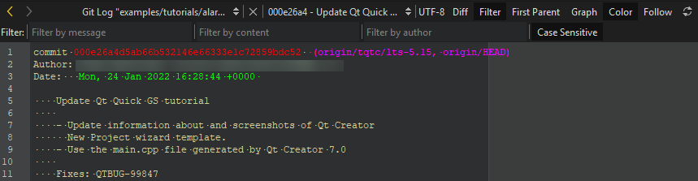
Right-clicking on a commit identifier brings up a context menu that lets you apply actions on the commit, such as view annotations or cherry-pick or revert a commit. For more information, see Working with Branches.
To toggle the diff view, select Diff. To use the patience algorithm for calculating the differences, select Patience. To only show text changes, select Ignore Whitespace.
To filter log entries by the text in the commit message, by strings that were added or removed, or by author, select Filter. Enter a search sting in the Filter by message, Filter by content, or Filter by author field. Select Case Sensitive to make filtering consider case.
To follow only the first parent on merge commits, select First Parent.
To toggle between textual and visual representation of the log, select Graph.
To toggle color coding of different parts of the log entries, select Color.
To show log also for previous names of the file, select Follow.
Select  (Reload) to rescan the files.
(Reload) to rescan the files.
To display a description of the change including the diff in the Git Show view, select Describe Change in the context menu.
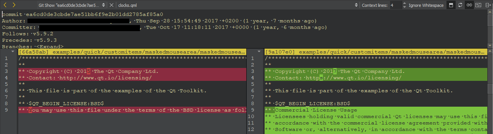
Viewing Annotations
To view annotations, select Blame. The Git Blame view displays the lines of the file prepended by the commit identifier they originate from.
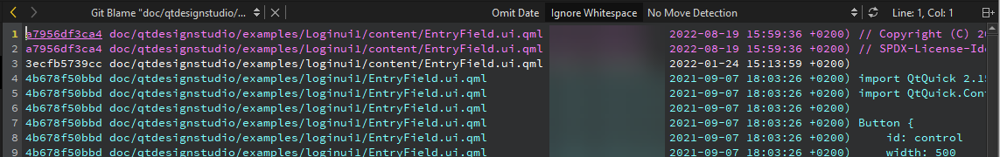
By default, each line is annotated in the editor when you scroll through the file. To disable this feature, select Preferences > Version Control > Git, and deselect Instant Blame. To find the commit that introduced the last real code change, select Ignore whitespace changes. To find the commit that introduced a line before it was moved, select Ignore line moves.
To view annotations for the current line, select Tools > Git > Current File > Instant Blame.
Click the commit identifier to show a detailed description of the change.
To show the annotation of a previous version, right-click on the commit identifier and select Blame Parent Revision. This allows you to navigate through the history of the file and obtain previous versions of it.
To view moved or copied lines within a file or between files, select Detect Moves Within File, Detect Moves Between Files, or Detect Moves and Copies Between Files.
To hide the date and time information in the view, select Omit Date.
The other actions in the context-menu enable you to apply actions to the commit, such as cherry-pick, checkout, or revert it.
To rescan the files, select (Reload).
Staging Changes
To mark a new or modified file for committing it to the repository, select Stage File for Commit. To undo this function, select Unstage File from Commit.
Resetting Changes
Git uses an index to stage changes. The index is committed on the next commit. Git allows you to revert back to the state of the last commit as well as to the state staged in the index.
To revert all changes and reset the current file to the state of the index, select Undo Unstaged Changes.
To return the current file to the state it was in right after the last commit, select Undo Uncommitted Changes. This reverts all changes, discarding the index.
Working with the Current Project
To work with the current project, select the commands in Tools > Git > Current Project. The Diff Project and Log Project commands, which are also available for the current file, are described above.
Cleaning Projects
To clean the working directory, select Clean Project. All files that are not under version control are displayed in the Clean Repository dialog. Ignored files are deselected by default. Select the files to delete, and then select Delete.
Working with Local Repositories
To work with the local repository, select the commands in Tools > Git > Local Repository. The commands that are also available for the current file or project are described above.
Viewing Reference Log
Reference logs record when the tips of branches and other references were updated in the local repository. To view the reference log, select Reflog.
Viewing Git Status
To view the status of the repository in Version Control, select Status. The context menu has additional actions, such as selecting and clearing all entries, copying text, and opening files.
Committing Changes to Git
To submit your changes to Git, select Commit. Qt Creator displays a commit page containing a text editor where you can enter your commit message and a checkable list of modified files to include.
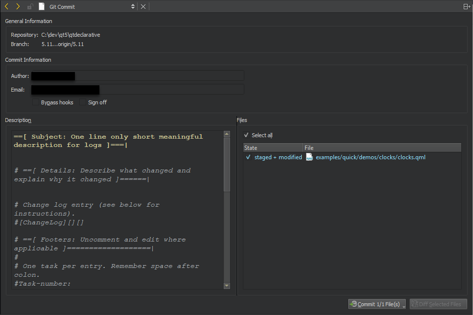
General Information displays the names of the repository and branch for the commit.
In Commit Information, you can edit information about the author of the commit. To bypass re-commit and commit message hooks, select Bypass hooks. If your project uses signoffs, select Sign off to add a signed-off-by trailer by the author at the end of the commit log message.
In Description, edit the commit message.
In Files, select the files to include in the commit.
When you have finished filling out the commit page information, select Commit to start committing.
The Diff Selected Files button opens a diff view of the files selected in the file list. Select Stage Chunk in the context menu to stage a chunk or Stage Selection to stage the selected lines.
To unstage chunks or selected lines, select Unstage Chunk or Unstage Selection in the context menu. To revert the changes in a chunk, select Revert Chunk.
The commit page is just another editor, and therefore you return to it when you close the diff view. You can also switch to an open diff view by selecting it in the Open Documents view in the sidebar.
Amending Commits
To apply latest changes to the last commit, select Tools > Git > Local Repository > Amend Last Commit.
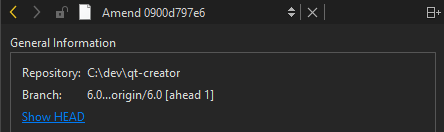
To view the commit in its current form, before amending, select Show HEAD.
To view a diff of the changes in the selected files, select Diff Selected Files.
Select Commit to amend the commit.
To amend an earlier comment in a series of related commits, select Tools > Git > Local Repository > Fixup Previous Commit. This operation uses interactive rebase. In case of conflicts, a merge tool is suggested.
Resetting Local Repository
To reset changes, select Reset. This opens a dialog where you can select the commit to reset the working directory to. This is useful after applying patches for review, for example. You can choose between a Soft reset that does not touch the index file nor the working tree at all, a Hard reset that discards all changes to tracked files in the working tree, and a Mixed reset that resets HEAD and the index (nothing remains staged) without touching the working directory.
To recover removed files, select Recover Deleted Files.
To change a series of commits in the local repository, select Interactive Rebase. You can reorder or discard commits, squash them into a single commit, or edit the commit messages.
If you already pushed the local changes to a remote, Qt Creator refuses the interactive rebase because the local commits are missing. To start the interactive rebase from the change log, select Branches > Log. Select the change, and then select > Interactive Rebase from Change in the context menu.
Working with Branches
To work with Git branches, select Branches. The Git Branches view shows a list of branches, as well as the differences between your local branches and their origin. The branch you checked out is shown in bold and underlined.
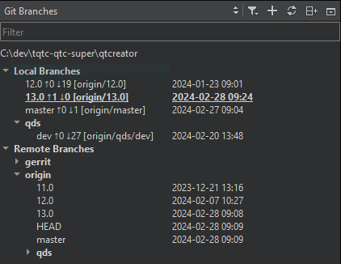
Old entries and tags are filtered out of the list of branches by default. To include them, select  (Filter Tree), and then select Include Old Entries and Include Tags.
(Filter Tree), and then select Include Old Entries and Include Tags.
To add a tag to a change in the change log, select Branches > Log. Select the change, and then select Add Tag for Change in the context menu.
If you checked out a specific commit, the list of branches displays a Detached HEAD entry.
For local and remote branches, double-click the branch name to view the change log.
To refresh the list of branches, select (Refresh).
Adding Branches
To create a new tracking or non-tracking branch, select  .
.
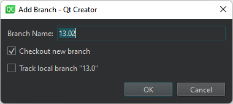
To check out the branch when creating it, select Checkout new branch.
To track the selected branch, select Track local branch.
Managing Branches
The context menu for a branch has the following functions:
| Menu Item | Description |
|---|---|
| Add | Create new tracking and non-tracking branches. |
| Remove | Remove a local branch. You cannot delete remote branches. |
| Rename | Rename a local branch or a tag. You cannot rename remote branches. |
| Checkout | Check out the selected branch and make it current. You can stash changes you have made to tracked files. |
| Diff | Show the differences between the selected and the current branch. |
| Log | Show the changes in a branch. |
| Reset | Reset the active branch to the selected branch. You can choose between a Hard, Mixed, and Soft reset. For more information, see Resetting Local Repository. |
| Merge | Join the development histories in two branches together. If the commit you are merging can be reached by following the first commit's history, there is no divergent work to merge together. To allow Git to move the branch pointer forward, select Merge (Fast-Forward). If you do not want to fast-forward the branch, select Merge (No Fast-Forward). |
| Rebase | Copy local commits to the updated upstream head. |
| Cherry Pick | Cherry pick the top commit from the selected branch. |
| Track | Set the current branch to track the selected one. |
| Push | Push the committed changes to the selected remote branch. |
The context menu for a remote branch has the following additional functions. To open it, select Remote Branches or a remote repository.
| Menu Item | Description |
|---|---|
| Fetch | Fetch all the branches and changes information from a specific remote repository, or from all remotes if applied to Remote Branches. |
| Manage Remotes | Open the Remotes dialog. |
Configuring Merge Tools
Only graphical merge tools are supported. You can configure the merge tool to use on the command line. For example, to use the KDiff3 merge tool, enter the following command:
git config --global merge.tool kdiff3
Applying Patches
Patches are rewriting instructions that Git can apply to a set of files. To apply a patch file that is open in Qt Creator, select Patch > Apply from Editor.
To select the patch file to apply from the file system, select Apply from File.
Using Stashes
With Git, you can put your current set of changes onto a virtual shelf called a stash. Stashes are useful, for example, to put aside a set of changes to work on higher priority tasks or to pull in new changes from another repository.
To stash all local changes, select Stash > Stash. The working copy is reset to the state it had after the last commit. To save the current state of your unstaged files and reset the repository to its staged state, select Stash Unstaged Files.
To display a dialog that shows all known stashes with options to restore, display or delete them, select Stashes.
To save a snapshot of your current work under a name for later reference, select Take Snapshot. The working copy is not changed. For example, if you want to try something and find out later that it does not work, you can discard the changes and return to the state of the snapshot.
To remove a single stashed state from the stash list and apply it on top of the current working tree state, select Stash Pop.
Applying Actions to Commits
To browse a directory or the commit history and to apply actions on the commits, select Tools > Git > Actions on Commits.
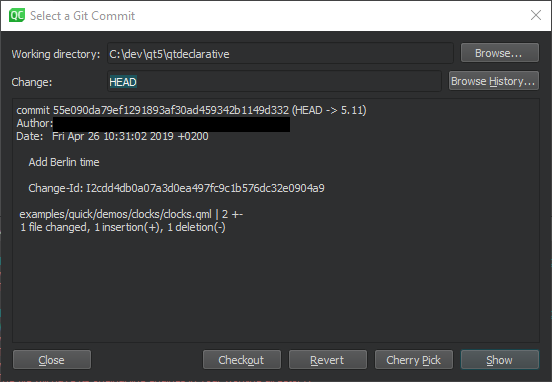
You can apply the following actions on commits:
| Menu Item | Description |
|---|---|
| Archive | Package the commit as a ZIP or tarball. |
| Checkout | Check out the change in a headless state. |
| Cherry Pick | Cherry-pick the selected change to the local repository. |
| Revert | Revert back to the state of the last commit. |
| Show | Show the commit in the diff editor. |
Working with Remote Repositories
To work with remote repositories, select the commands in Tools > Git > Remote Repository.
To fetch all the branches and change information from a remote repository, select Fetch.
To pull changes from the remote repository, select Pull. If there are locally modified files, you are prompted to stash the changes. Select Preferences > Version Control > Git and then select the Pull with rebase check box to perform a rebase operation while pulling.
To push committed changes to the remote repository, select Push. If the local branch does not have an upstream branch in the remote repository, Qt Creator prompts you to create it and set it as upstream.
Managing Remote Repositories
To manage remote repositories available in Git, select Tools > Git > Remote Repository > Manage Remotes. Double-click the names and URLs of the remote repositories to edit them.
The following operations are supported:
| Menu Item | Description |
|---|---|
| Refresh | Refresh the list of remote repositories. |
| Add | Add a new remote repository. |
| Fetch | Fetch all the branches and change information from a remote repository. |
| Push | Push committed changes to the remote repository. |
| Remove | Remove a remote repository. |
Using Git with Subversion
You can use Git as a client for a Subversion server. To fetch changes from a Subversion repository to a Git repository, select Tools > Git > Remote Repository > Subversion > Fetch.
To view the Git Subversion log, select Log.
To publish the commits from the current branch to the Subversion server, select DCommit. This will create a revision in Subversion for every local Git commit. Afterwards, the branch is rebased or reset (depending on whether or not there is a diff between Subversion and head).
Reviewing Code with Gerrit
If your Git project uses Gerrit for code reviews, you can view your changes in Qt Creator.
To push committed changes to Gerrit, select Tools > Git > Remote Repository > Push to Gerrit.
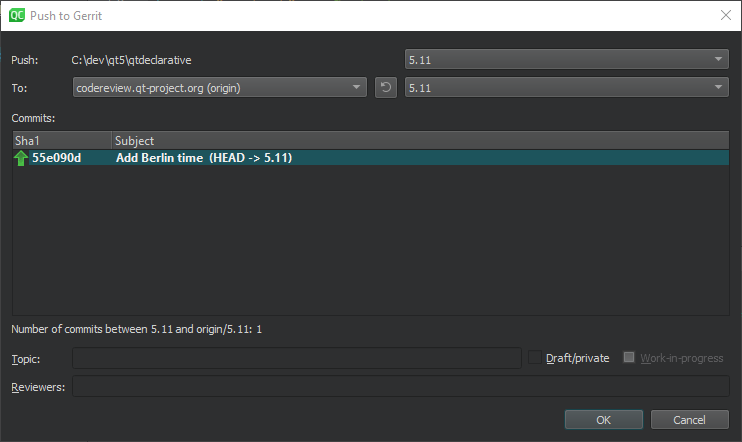
Select the Draft/private check box to push changes that are only visible to you and the reviewers. If you are using Gerrit 2.15 or later, you can select the Work-in-progress check box to push changes that do not generate email notifications.
To view the same information about each change as in the Gerrit web interface, select Tools > Git > Remote Repository > Gerrit.
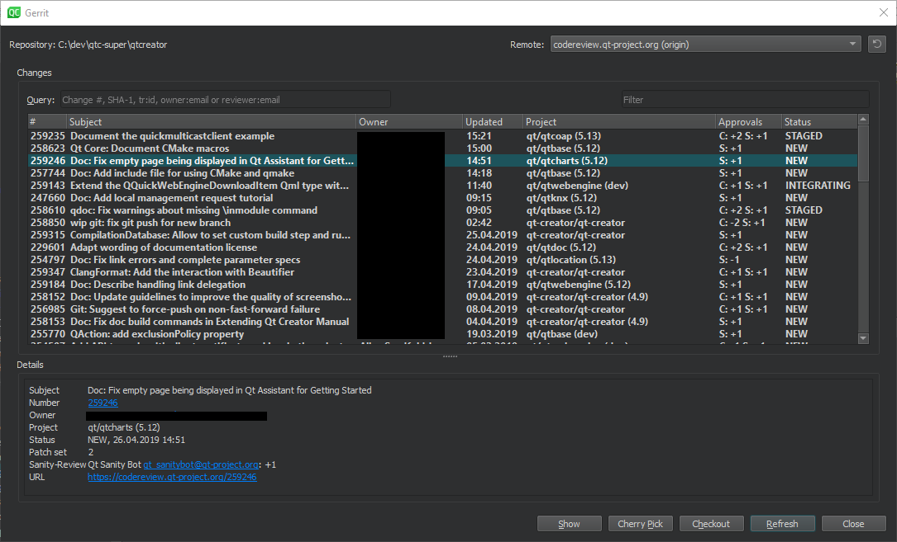
To view details of the selected change, select Show.
To cherry-pick the selected change to the local repository, select Cherry Pick. To remove the change after testing it, select Tools > Git > Local Repository > Reset. In the Undo Changes to dialog, select the state to reset the working directory to, and then select OK.
To check out the change in a headless state, select Checkout.
To refresh the list of changes, select Refresh.
The Remote field lists the remotes of the current repository that are detected as Gerrit servers. Select Preferences > Version Control > Gerrit to specify a fallback connection to a Gerrit server over SSH. The Gerrit REST interface and the curl tool are used for HTTP connections.
Select the HTTPS check box to prepend https to the Gerrit URL if Gerrit does not add it.
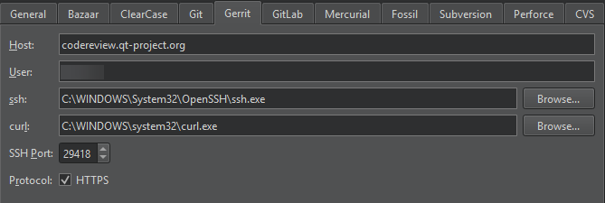
Working with Git Tools
To start a graphical interface to Git, select Tools > Git > Git Tools > Git Gui.
Note: On macOS, the default Git installation does not have Git Gui. To use Git Gui, install it separately. To start Git Gui from Qt Creator, select Preferences > Version Control > Git, and set the path to the environment that has Git Gui in the Prepend to PATH field.
To start the commit viewer for Git, select Tools > Git > Git Tools > Gitk. You can also start the tool to view commits in the current document or in the folder that has the current document. To specify arguments for running Gitk, select Preferences > Version Control > Git.
To use some other application for viewing Git history, such as GitX or QGit viewer, select Preferences > Version Control > Git and specify the path to the application executable in the Command field. To start the application, select Tools > Git > Git Tools > Repository Browser.
To start git bash, select Tools > Git > Git Tools > Git Bash.
To resolve merge conflicts, select Tools > Git > Git Tools > Merge Tool. This menu item is visible only when you have merge conflicts to resolve.
See also Compare files, Set up version control systems, and Version Control Systems.